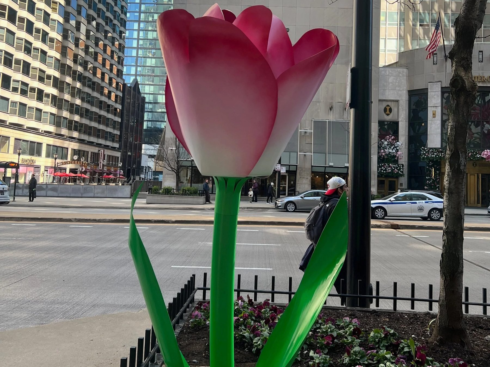
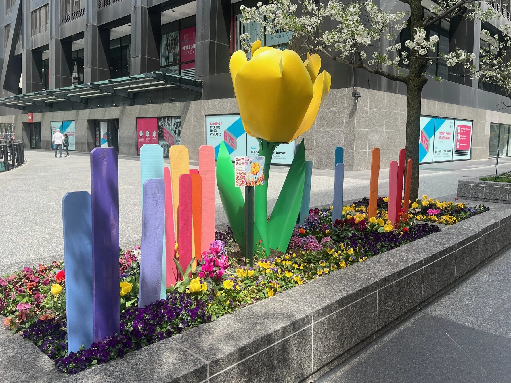
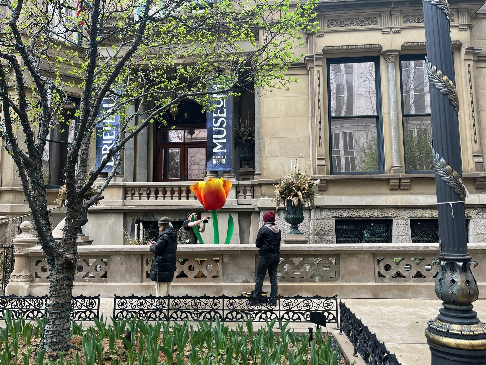
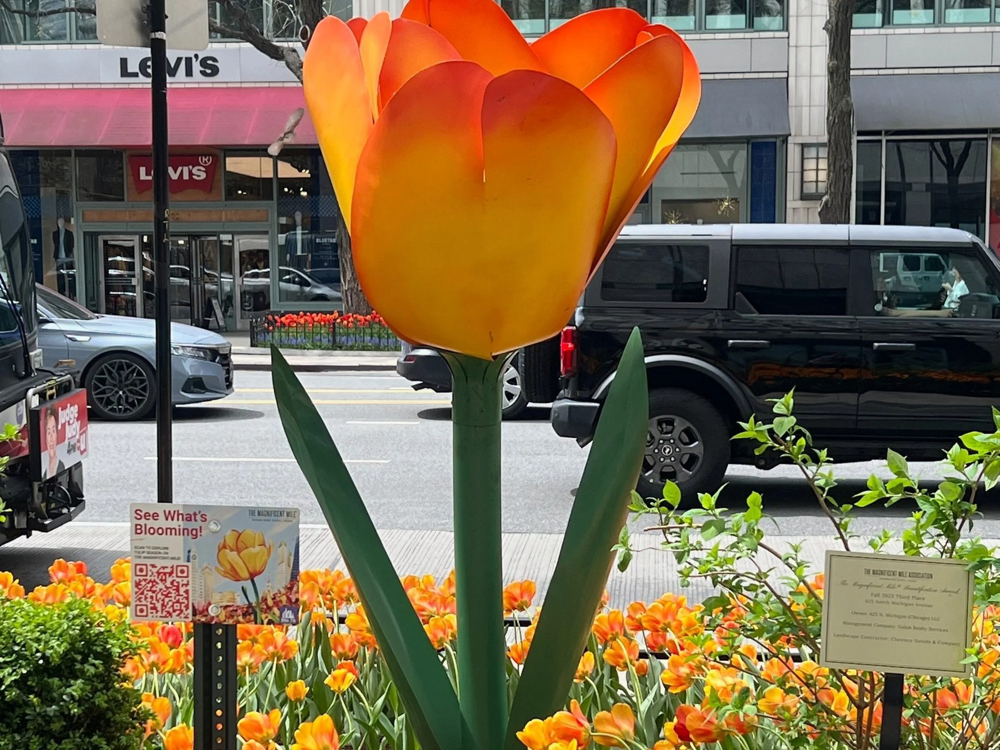
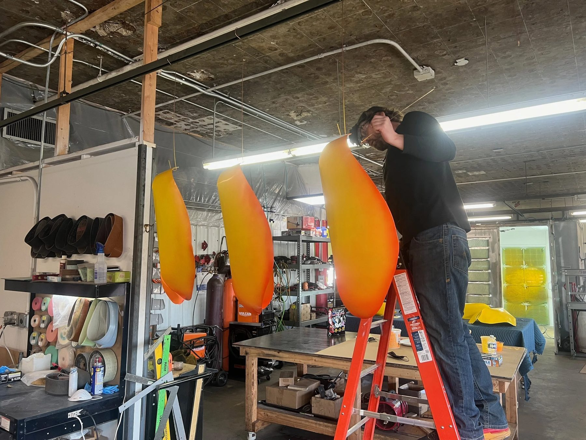
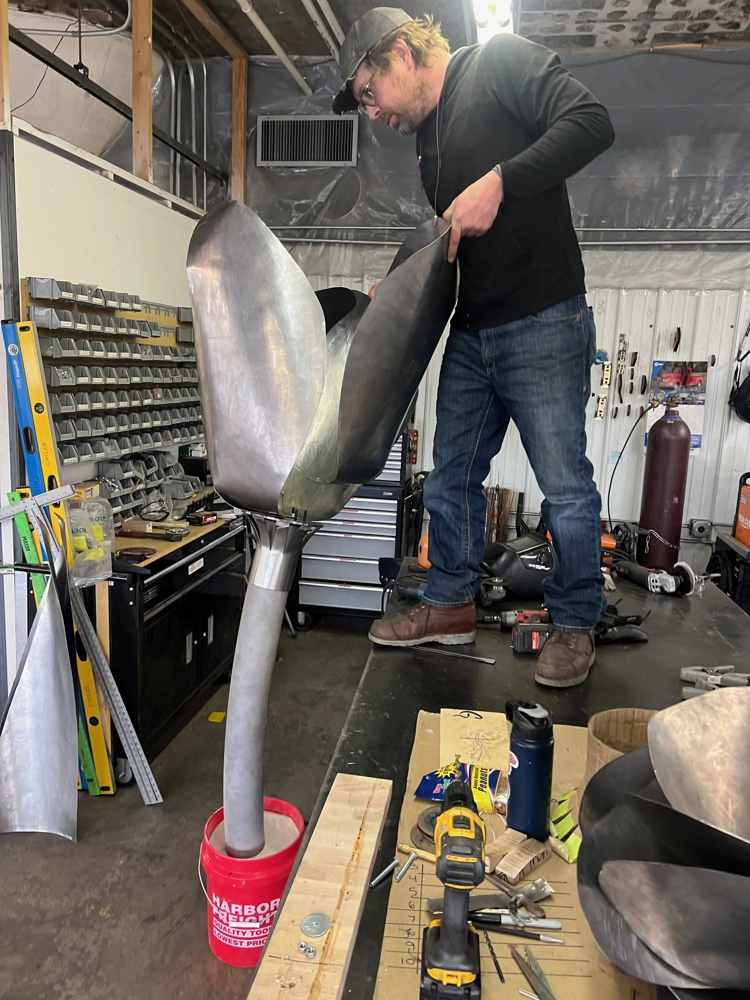
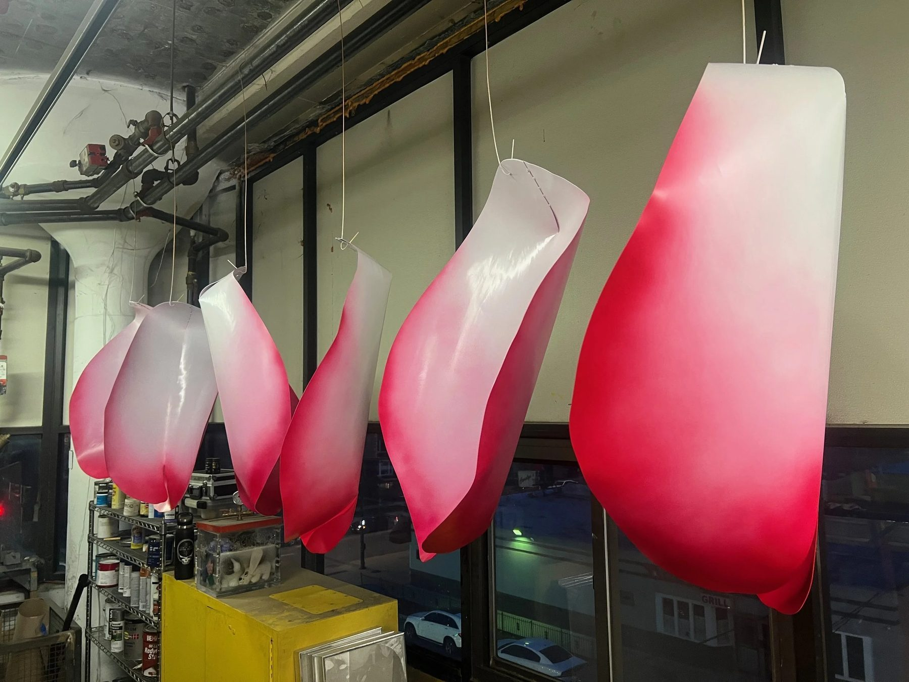
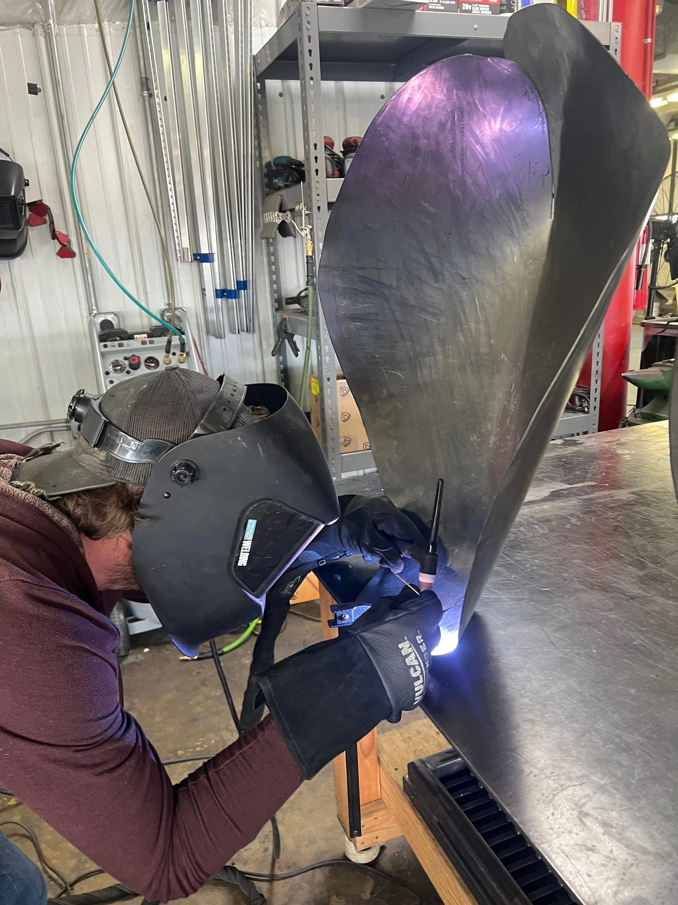

Public Art / 2025
Tulips on The Magnificent Mile
The Magnificent Mile Association
Five oversized tulip sculptures placed along Michigan Avenue for the city's annual spring bloom.
In the spring of 2025, in partnership with The Magnificent Mile Association and CNL Projects, we developed five custom tulip sculptures with artist Aiden Kelley for the city's signature street.
Chicago's annual tulip bloom blankets the Mile with color. These sculptures were an opportunity to put public sculpture and Chicago's floral tradition in the same frame.
Each tulip was installed at a different point along the stretch. The sculpture at 625 N. Michigan Avenue shows the Official Magnificent Mile Tulip in brilliant yellow with orange accents, cultivated specifically for Michigan Avenue's displays and bred to hold up in Chicago's unpredictable spring.
Details
- Year
2025 - Location
Chicago, IL - Category
Public Art - Materials
Fabricated metal, automotive finish
Credits
- The Magnificent Mile Association
- CNL Projects
- Artist: Aiden Kelley
Index








